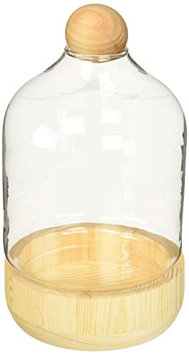

Circleware 32510 Terraria Plant Glass Terrarium Home Decor Flower Balcony Box and Garden Gifts, 2-Piece, 4.7” x 9.06”, Wood Table Display
$21.99
Buy on Amazon
Manufacturer description
- Strong, sturdy, high quality and stylish. Elegant glass; terrarium is perfect for holding plants or other objects, and can serve as a stylish and modern style centerpiece by itself.
- This beautiful terrarium planter is simple and versatile, creates a fashion life atmosphere, makes your life more poetic and relaxing. Fit for succulents, air plants, small plants, fern, cactus, moss, air plants, or other decorative objects.
- Makes an ideal gardening gift set for friends, families and your loved ones. These are perfect party decorations. Depending on the theme you will find use for them. They make great gifts for any occasion. These are perfect for: Christmas, Birthday gifts, wedding party, your best selling Beverage, Valentine's day, Anniversary, Father's Day, Mother's Day, housewarming, Cyber Monday and Black Friday sale gifts, New Years, College Graduation, St. Patrick's day, Congratulations, Job Promotion, Stocking Stuffers
- Stylish display, this attractive hanging terrarium will show off your air plants, ferns, Moss, cacti and other succulent greens with contemporary flair.
- Boxed for easy wrapping, present this beautiful terrarium to anyone who enjoys Urban gardening or appreciates modern home furnishings.
- By Circleware famous manufacture of all types of glassware, glass milk drinking bottles, 2-gallon Iced Yorkshire double barrel mason jars Chalkboard beverage drink dispenser with spigot, infuser and metal stand, solid boots shot glasses, Moscow mule copper mugs, Butterfly butter dish, bar Water cups, olive oil Balsamic vinegar Cruet set, sun tea pitcher, pint beer mug pub stein, chafer party dishes, and other accessories!
- Whiskey Liquor decanter, trifle food fruit bowls containers, gravy boat, stemless wine, mill, ceramic salt pepper, juice kitchen blue bottle, ounce cups, lid, candy jug, chalk bowl gallon, Coffee brass, Irish drinkware, decorative circles whisky ice carafe, straws, barware, beehive chamber, nostalgia chrome spout, board, best social events gal garden canisters, fun strong durable footed windowpane kids children home goblet, Limited stackable pure Circle Country spectrum Highball Cooler DOF jar handle,
- Color old beach pilsner, red Ball dessert Canister, clear tall, buffet casserole, colored, Honey, soap, tumbler, Bee crystal Mystic gold cup, classic personalized embossed large Lead Free entertaining piece amber columns Theory flavor hermetic beverages edition classics, funny craft black cyber, mini Italian cut DOF, tempered bakeware, vase, pots, locking serve ware, white cappuccino stout pourer, small cold Shaker, rainbow borosilicate, two Moonshine editions, all new quart tray glass cups.
- The base of this glass provides maximum stability.
- Why choose a glass over plastic? Looks sleeker and elegant, and is thicker and sturdier than plastic. Glass is also better for the planet: made from all-natural, sustainable raw materials, glass is 100% recyclable.